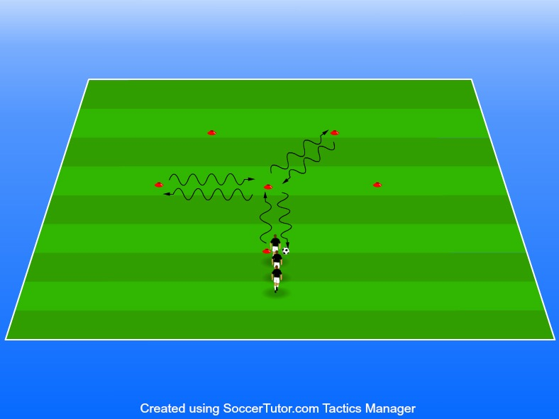

Drivteknik, lära sig att utmana samt för barnen att ha kul Teknikbanor Bana 2
6-10 spelare per bana
1 boll/spelare
Antal koner anpassas Här ändrar vi avståndet mellan koner så att man får testa på touch i flera
Cruyff-vändning
Oftast kombinerad med en skottfint.
Utsida
Insida framför ben
Vänd med utsidan av foten.
Insida bakom ben
Vänd med insidan framför stödjebenet.
Sulvändning
Vänd med insidan av foten bakom stödjebenet.
Driv bollen med valfri fot
Driv bollen med utsidan av foten
Driv bollen med insidan av foten
Driv bollen med sulorna sidledes
Driv bollen med sulorna framlänges här använder vi båda fötterna
Driv bollen med sulorna baklänges här använder vi båda fötterna
Driv bollen genom att göra tvåfotare Spelaren driver bollen in i mitten, ut till en kon och vänder, driver in mot mitten hittar en till kon och vänder sen driver hen mot mitten och lämnar till sist över bollen till nästa spelare i ledet. Styr gärna spelarna till att använda en specifik vändning. Gör upp fler banor om ni är många i gruppen för att undvika lång väntan. • Cruyff-vändning Exempel på vändningar – Oftast kombinerad med en skottfint. • Utsida Flytta bollen bakåt med toppen av insidan av foten. • Insida framför ben – Vänd med utsidan av foten. • Insida bakom ben – Vänd med insidan framför stödjebenet. • Sulvändning – Vänd med insidan av foten bakom stödjebenet. - med toppen av sulan drar spelarna bollen bakom sig